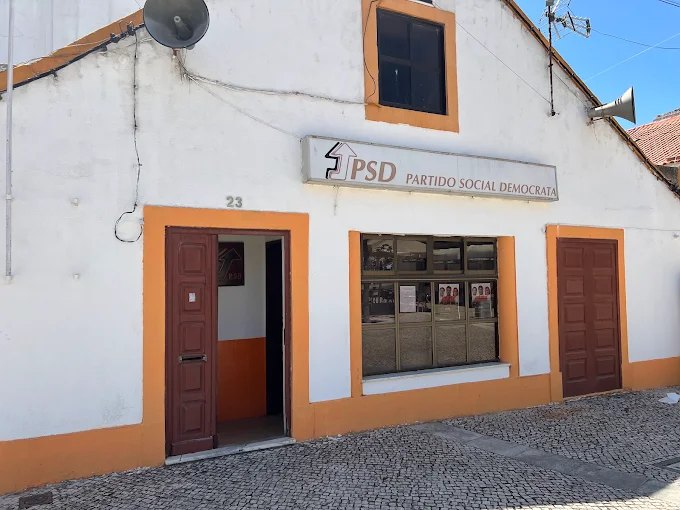

Uma nova direção para o PSD Montijo
Em 2025 o PSD teve no Montijo o pior resultado na Câmara das últimas quatro autárquicas. o candidato, a anunciar em breve, candidata-se à Comissão Política Concelhia com uma equipa aberta à sociedade civil e um objetivo: pôr o Montijo à frente da Península de Setúbal.
O Montijo visto do céu. Vídeo cedido à candidatura.
De 2021 para 2025, o PSD recuou no Montijo
O pior resultado na Câmara das últimas quatro autárquicas, e com mais gente a votar. Mais do mesmo não chega.
- Votação na Câmara
- Em 2021:
27,74%Em 2025: 16,68% - Votos na Câmara
- Em 2021:
5.547Em 2025: 3.917 - Vereadores
- Em 2021:
2Em 2025: 1 - Deputados municipais
- Em 2021:
7Em 2025: 4 - Mandatos nas freguesias
- Em 2021:
15Em 2025: 11
A exceção é Canha, que passou a ter presidente de junta do PSD. É a única freguesia do concelho onde isso acontece.
Fontes: resultados oficiais, via Wikipédia (2021) e RTP (2025, após a recontagem).
O que muda connosco
Cinco compromissos para a nova direção
-

Uma casa no centro
Propomos recuperar a antiga sede do PSD, no n.º 23 da Praça da República, e reconstruí-la, para o PSD voltar a ter casa no centro do Montijo. Até 2024, foi aqui a sede do partido.
Uma direção nova
Liderada por o candidato, a anunciar em breve, que vem da sociedade civil.
Um objetivo que se mede
O maior poder de compra por habitante da Península de Setúbal, com contas prestadas todos os anos.
Portas abertas
Um Gabinete de Estudos com independentes e entrada facilitada para quem quer aderir ao PSD.
Os jovens nas listas
Lugares de responsabilidade na Comissão Política e nas listas de 2029, em articulação com a JSD.
O candidato, a anunciar em breve
O nosso candidato é anunciado em breve.

Um objetivo que se mede
Primeiro em poder de compra na Península de Setúbal
O objetivo para dois mandatos, medido pelo INE: o maior poder de compra por habitante entre os nove concelhos da Península de Setúbal.
Fontes: INE, Estudo sobre o Poder de Compra Concelhio, dados de 2023 publicados em novembro de 2025 (média nacional = 100); Pordata, via ECO, setembro de 2025. Foto: Moinho de maré no Montijo, ao fim da tarde, de Paulo Valdivieso, CC BY-SA 2.0.

Moção de Estratégia Global
Quatro pilares para chegar ao objetivo. As medidas são propostas da pré-moção, abertas ao debate com militantes e quadros da sociedade civil.
Pessoas
O pilar mais importante. Crescer é a forma mais duradoura de reduzir a pobreza, e o concelho mais jovem do continente tem de dar aos jovens razões para ficar.
Medidas propostas
- Levar ao programa autárquico um plano municipal de combate à pobreza, com metas anuais e relatório público.Programa autárquico 2029
- Levar ao programa autárquico propostas de habitação acessível para jovens que queiram ficar no concelho.Programa autárquico 2029
- Rever o IMI e as taxas municipais, incluindo as que vêm na fatura da água, para que acompanhem o poder de compra do concelho e não pesem mais do que devem nas famílias.Programa autárquico 2029
- Dar a jovens lugares de responsabilidade na Comissão Política e nas listas autárquicas, em articulação com a JSD.Todo o mandato
Como vamos medir
Jovens até aos 30 anos nos órgãos da concelhia e nas listas de 2029. No concelho, o poder de compra por habitante medido pelo INE.
Empresas e indústria
Manter e modernizar as empresas que já cá estão, atrair novas e preparar o concelho para o novo aeroporto Luís de Camões, no Campo de Tiro de Alcochete, que entra pela freguesia de Canha.
Medidas propostas
- Criar um Conselho Consultivo de empresários junto da Comissão Política e percorrer as zonas industriais do concelho, com relatório público das propostas.1.º ano do mandato
- Levar ao programa autárquico solo e um plano para atrair empresas, logística e serviços ligados ao novo aeroporto, antes que o investimento vá para os concelhos vizinhos.Programa autárquico 2029
- Preparar projetos do concelho para os fundos europeus da Península de Setúbal, que passou a ser uma região própria.Programa autárquico 2029
- Levar ao programa autárquico um balcão único para o investimento, com prazos máximos de resposta da Câmara às empresas.Programa autárquico 2029
Como vamos medir
Número de empresas ouvidas e de propostas acolhidas no programa autárquico, publicado no fim de cada ano do mandato.
Rio, turismo e centro
O Tejo, o Moinho de Maré, o Cais das Faluas e as Festas de São Pedro podem trazer quem nos visita e fazê-lo ficar. Um centro com comércio vivo é a primeira montra do concelho.
Medidas propostas
- Levar ao programa autárquico um plano para a frente ribeirinha: hotelaria de qualidade, restauração e animação que façam o visitante ficar mais do que um dia.Programa autárquico 2029
- Fazer um levantamento, rua a rua, das lojas abertas e encerradas no centro da cidade, com resultados públicos.1.º semestre do mandato
- Levar ao programa autárquico um plano de renovação do centro: espaço público, estacionamento e incentivos à reabertura de lojas devolutas.Programa autárquico 2029
- Defender junto do Governo mais e melhores ligações fluviais entre o Seixalinho e Lisboa.Todo o mandato
Como vamos medir
Lojas abertas no centro face ao levantamento inicial e dormidas turísticas no concelho (INE), medidas todos os anos.
Conhecimento e quadros
Trazer para o PSD e para o concelho pessoas com experiência profissional, e ligar a formação às empresas que precisam de gente qualificada.
Medidas propostas
- Criar um Gabinete de Estudos aberto a independentes, organizado por pilares, que prepare o programa autárquico.Primeiros 6 meses
- Convidar profissionais da sociedade civil, militantes ou independentes, para coordenar cada pilar desta moção.1.º trimestre do mandato
- Levar ao programa autárquico parcerias entre a formação profissional do concelho, o Politécnico de Setúbal e as empresas.Programa autárquico 2029
- Facilitar a entrada no partido: apoio na inscrição online e proponente garantido para quem quer aderir.Permanente
Como vamos medir
Número de novos militantes e de independentes envolvidos no Gabinete de Estudos, publicado no fim de cada ano.
Cinco freguesias, um concelho
Do Tejo a Canha
 Montijo e AfonsoeiroMoinho de Maré do Cais das Faluas e o casario. Foto de GualdimG, CC BY-SA 4.0.
Montijo e AfonsoeiroMoinho de Maré do Cais das Faluas e o casario. Foto de GualdimG, CC BY-SA 4.0. Atalaia e Alto Estanqueiro-JardiaIgreja de Nossa Senhora da Atalaia. Foto de Pedro S Bello, CC BY-SA 4.0.
Atalaia e Alto Estanqueiro-JardiaIgreja de Nossa Senhora da Atalaia. Foto de Pedro S Bello, CC BY-SA 4.0. Sarilhos GrandesBaía de Sarilhos Grandes. Foto de Vitor Oliveira, CC BY-SA 2.0.
Sarilhos GrandesBaía de Sarilhos Grandes. Foto de Vitor Oliveira, CC BY-SA 2.0. PegõesColonato de Santo Isidro de Pegões. Foto de Pedro S Bello, CC BY-SA 4.0.
PegõesColonato de Santo Isidro de Pegões. Foto de Pedro S Bello, CC BY-SA 4.0. CanhaSobreiro em Canha. Foto de Pedro S Bello, CC BY-SA 4.0.
CanhaSobreiro em Canha. Foto de Pedro S Bello, CC BY-SA 4.0.


Freguesias
PSD em 2025 e quem ganhou a junta
- Montijo e Afonsoeiro41 404 habitantes
- Atalaia e Alto Estanqueiro-Jardia5 379 habitantes
- Pegões4 090 habitantes
- Sarilhos Grandes3 243 habitantes
- Canha1 566 habitantes
Assembleias de freguesia: RTP (2013 e 2017), Wikipédia (2021) e SGMAI via Observador (2025). População: INE, Censos 2021.
Resultados
O PSD no Montijo nas autárquicas de 2013 a 2025
Fontes: resultados oficiais, via Wikipédia (2013 a 2021) e RTP (2025, após a recontagem). O PSD concorreu sozinho em 2013, com o CDS em 2017, com o CDS e a Aliança em 2021 e com a IL em 2025.
Roteiro
Da pré-moção às autárquicas
- 12026
Pré-moção
Ouvir militantes e quadros da sociedade civil sobre as propostas.
Estamos aqui - 2A seguir
Moção de Estratégia Global
Versão final, com medidas, prazos e indicadores.
- 32027
Eleição da Comissão Política Concelhia
Votam os militantes com as quotas em dia.
- 42029
Eleições autárquicas
Projeto, rosto e obra para o Montijo.
Agenda
Próximos eventos do concelho
Para mudar, é preciso votar
Na eleição da Comissão Política Concelhia votam os militantes com as quotas em dia. Se ainda não és militante, adere já.
Segue a candidatura
[endereços das redes sociais por indicar]